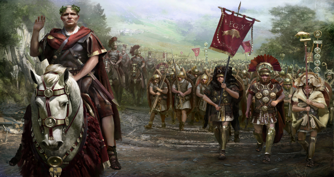

A fondare la città di Barcellona fu il cartaginese Amilcare Barca, padre di Annibale. In realtà l'esistenza di una Barcellona punica non si è mai potuta provare, così come sembra non avere molto più fondamento la nascita e lo sviluppo di un insediamento greco nelle immediate vicinanze della città. È probabile che i primi abitanti di Barcino, fondata intorno al 300 a.C., fossero delle genti di origine ibera. Successivamente i Romani riorganizzarono la città come un castrum (un campo militare), situato sul monte Tàber, una collina dove oggi sorgono da una parte il municipio e dall'altra la sede della Generalitat de Catalunya (Plaça de Sant Jaume). La città fu battezzata dai Romani con il nome di Colonia Iulia Augusta Faventia Paterna Barcino. L'organizzazione antica delle strade è ancora visibile nelle cartine del centro storico e nelle mura romane rimaste in piedi. Si ritiene che Barcino avesse anche un anfiteatro, probabilmente ubicato nei pressi della Basilica di Santa Maria del Mar.
La città fu poi conquistata dai Visigoti nel V secolo, dai Mori nell'VIII secolo, dai Franchi, guidati da Ludovico il Pio, nell'anno 801. Questi ultimi ne fecero la capitale della contea di Barcellona. Fu poi saccheggiata dal hajib omayyade Almanzor nel 985. A partire dal X secolo Barcellona visse un lungo periodo di prosperità che continuò anche quando, nel 1137, per un gioco di alleanze, il conte divenne re di Aragona, e la città il centro più rappresentativo del reame e capitale del Principato di Catalogna. Barcellona divenne uno dei maggiori porti del Mar Mediterraneo (i suoi mercanti e armatori rivaleggiavano con i genovesi); il centro si arricchì di sontuosi edifici gotici e, tra il XIII e il XIV secolo, due nuove cinte murarie ne fortificarono il cuore medievale. Nel XV secolo, la città entrò in un periodo di decadenza che si protrasse nei secoli successivi. L'unione personale con il regno di Castiglia, iniziata con il matrimonio tra Ferdinando II d'Aragona e Isabella di Castiglia nel tardo Quattrocento, segnò il declino economico della Catalogna, i cui cittadini furono esclusi dal commercio con l'America ormai scoperta. Nel 1717, a seguito della sconfitta subita contro le forze del primo dei Borboni di Spagna re Filippo V, la Catalogna perse l'indipendenza politica.